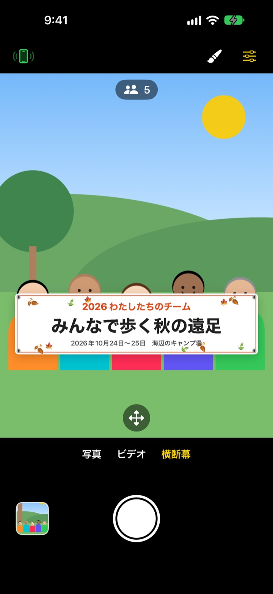
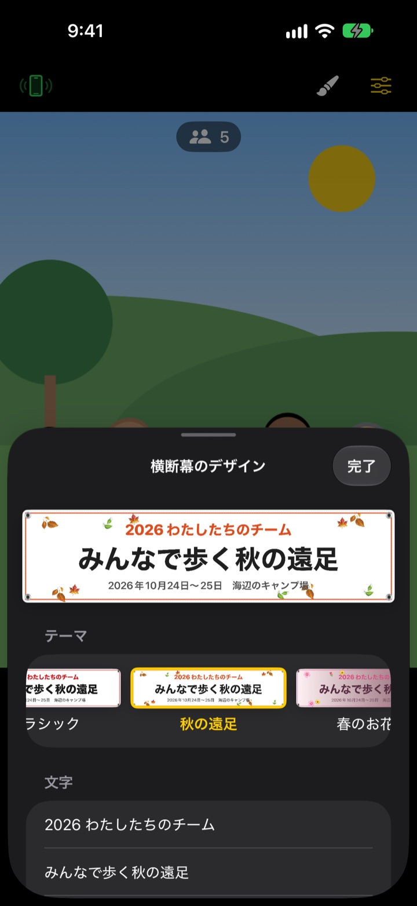

横断幕を持った集合写真、
横断幕なしで
文字を入れてテーマを選ぶと、画面の中の横断幕がみんなの前に置かれます。友だちのiPhoneはQRを読むだけでリモコンになり、撮る人も一緒に写れます。
すべての機能が無料です。iOS 17以降に対応しています。

横断幕を作ってみましょう
文字を書き換えて、テーマを選んでみてください。シャッターを押すと、アプリと同じように3秒数えてから撮ります。
写真1枚のために横断幕を作っていませんか？
遠足の記念写真のために横断幕を注文して、当日持って行き、終わったらしまう場所に困る。撮ってくれる人もいないので、誰か1人はいつも写真に入れません。ShutterLinkは横断幕を画面の中に出し、友だちのiPhoneをリモコンにして、全員が横断幕を持った写真に収まれるようにします。
集まりにぴったりの横断幕を1分で
秋の遠足、春のお花見、忘年会、誕生日、運動会、卒業、結婚式、社内研修など13のテーマから選び、3行の文字を自分で入れます。
背景、フォント、飾り、色、縦横比を変えたり、ロゴ画像を入れたりもできます。素材は布、ビニール、紙から選べて、布の横断幕は本物のようにたわみ、しわが寄り、風に揺れます。

リモコンはインストール不要、QRを読むだけ
左上のリモコンボタンを押すとQRコードが出ます。友だちが標準のカメラで読み取ると、ShutterLink RemoteがApp Clipとしてすぐに開いてつながります。
リモコンのライブビューには横断幕まで映るので、構図を決めてそのままシャッターを押すだけ。撮った写真はリモコンのiPhoneにもすぐ届くので、アプリを持っていない友だちもその場で保存して共有できます。
始め方は3ステップ
- 1
iPhoneを立てる
ShutterLinkを開いて、三脚や棚に立てます。
- 2
横断幕を置く
下で横断幕を選び、筆のボタンで文字とテーマを決めたら、みんなが立つ場所の地面をタップします。
- 3
手のひらを上げる
手のひらを上げるか、リモコンのシャッターを押すと、タイマーが数えて撮影します。
集合写真のための機能
- 手のひらジェスチャー・拍手シャッター
- カメラに向かって手のひらを上げるか、大きく1回手をたたくとタイマーが始まります
- スマイルシャッター
- 全員が目を開けて笑うと自動で撮ります
- タイマー 3・5・10・20・30秒
- 音声でカウントダウンし、フラッシュも一緒に点滅。リモコンは手元で振動して知らせます
- 全員にカメラを見るよう声をかける
- 押すとカメラ側のiPhoneが声をかけて、みんなの視線を集めます
- 連写 3枚・5枚
- 全員が目を開けて笑っているベストショットを選んでおきます。ギャラリーで別の1枚に変えることもできます
- 人数・端・水準器
- 写っている人数を数え、端で切れそうな人や画面の傾きを知らせます
- インターバル 3秒〜1分
- 夕焼けや作業の様子を一定間隔で残せます
- カメラ操作
- タップでピントと露出、露出補正、フラッシュ、グリッド、0.5倍から最大10倍のズーム（機種による）、前面・背面の切り替え、ビデオ
- かんたんモード
- リモコンに大きなシャッターボタンだけを表示。年配の方でも押しやすくなります
- 音量ボタン・カメラコントロール
- リモコンがなくても、カメラ側のiPhoneでそのままシャッターを切れます
横断幕モードでは、フラッシュ、連写、ズーム、前面カメラは使えません。タイマー、手のひらシャッター、リモコンはそのまま使えます。
すべての機能が無料です
無料
- 横断幕モードと13のテーマ
- インストール不要のリモコン（App Clip）
- 手のひら・拍手・スマイルシャッターとタイマー
- ベストショット、人数カウント、水準器
- ビデオとインターバル撮影
応援する（任意）
- 設定から小・中・大の3種類のチップを送れます
- チップで機能が増えたり制限されたりすることはありません
サブスクリプションではなく、送るときだけ1回支払います。
広告もアカウント登録もありません。
よくある質問
何が必要ですか？
撮影するiPhoneにShutterLinkをインストールします（iOS 17以降）。リモコンにするiPhoneはインストール不要で、App Clipを初めて開くときだけインターネット接続が必要です。どちらのiPhoneもBluetoothをオンにして、近く（通常10m以内）に置いてください。
QRを読み取ってもApp Clipが開きません。
リモコン側のiPhoneがインターネットにつながっているか確認してください。QRの代わりに、ShutterLink Remoteの画面でカメラ側のiPhoneに出ている4桁の接続コードを入れて「接続」を押してもつながります。設定 › スクリーンタイム › コンテンツとプライバシーの制限でApp Clipが制限されていないかも確認してください。
「カメラを探しています…」のまま進みません。
カメラ側のiPhoneでShutterLinkが画面に表示されている必要があります。両方のiPhoneで、設定 › BluetoothからBluetoothがオンになっているか確認してください。接続コードはアプリを開くたびに変わるので、アプリを開き直した場合は新しいQRかコードでつなぎ、「再試行」を押してください。
「Bluetoothの使用が許可されていません」と表示されます。
設定 › プライバシーとセキュリティ › BluetoothでShutterLinkをオンにしてください。リモコン側はApp Clipのため一覧に出ないことがあります。その場合はQRをもう一度読み取り、許可を求められたら「許可」を押してください。
ライブビューが途切れたりぼやけたりします。
ライブビューはBluetoothで送るために、あえて小さくした映像です。実際の写真とビデオはカメラ側のiPhoneの本来の画質で保存されます。2台の間に壁や人がいたり距離が離れたりすると途切れることがありますが、その間もシャッターなどの操作は使えます。
撮った写真はどこにありますか？
カメラ側のiPhoneの写真アプリと、アプリ内のギャラリーに保存されます。リモコン側にもコピーが届きますが自動では保存されないので、リモコンを閉じる前に保存するか共有してください。写真アプリに保存されない場合は、設定 › プライバシーとセキュリティ › 写真でShutterLinkを許可してください。
ビデオに音が入りません。
設定 › プライバシーとセキュリティ › マイクでShutterLinkをオンにしてください。
リモコンを複数台つなげますか？
はい。同じQRや接続コードで複数のiPhoneを同時につなげられ、どのリモコンから押しても同じカメラで撮影します。
撮影中に接続が切れます。
ShutterLinkは開いている間、画面が自動で消えないようにしています。サイドボタンでロックしたり別のアプリに切り替えたりすると接続が切れるので、撮影中はアプリを画面に表示したままにしてください。
写真がどこかにアップロードされますか？
いいえ。2台のiPhoneはBluetoothで直接つながり、写真とビデオは撮影したiPhoneとつないだリモコンにだけ残ります。電波のない山や海でも使え、アカウントも不要です。
解決しない場合や不具合を見つけた場合は leeo@kakao.com までお知らせください。2台のiPhoneの機種とiOSのバージョンを書いていただけると、早く確認できます。